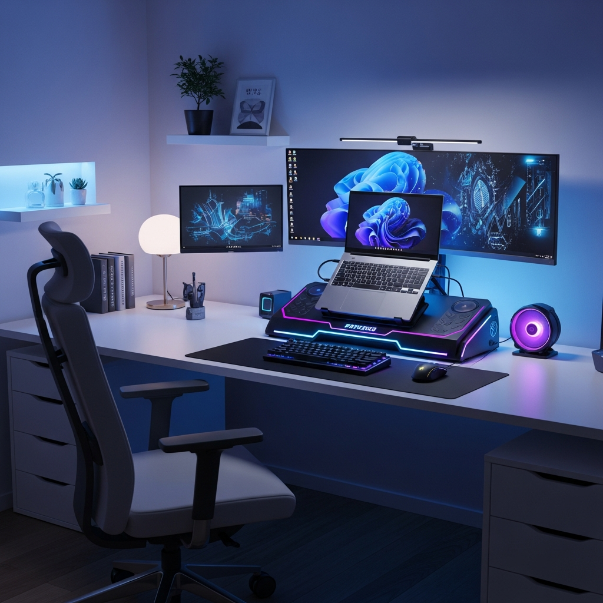
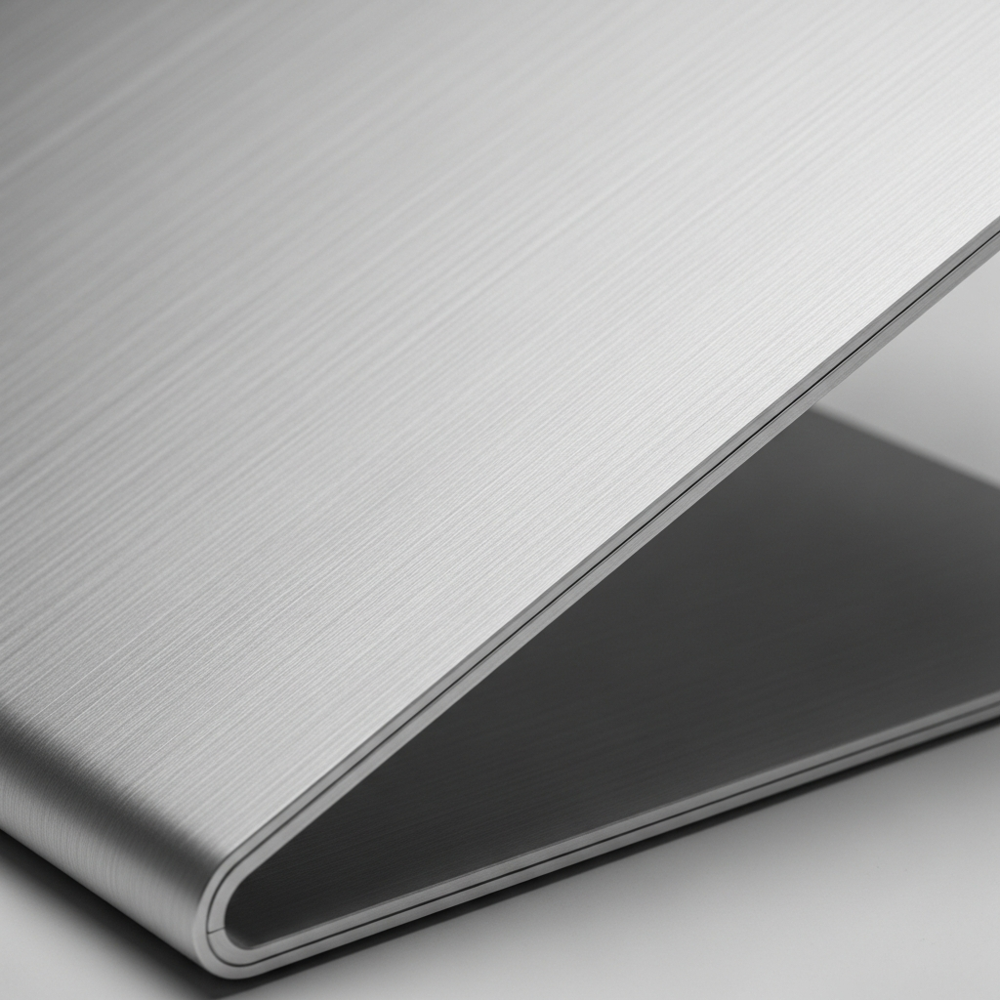
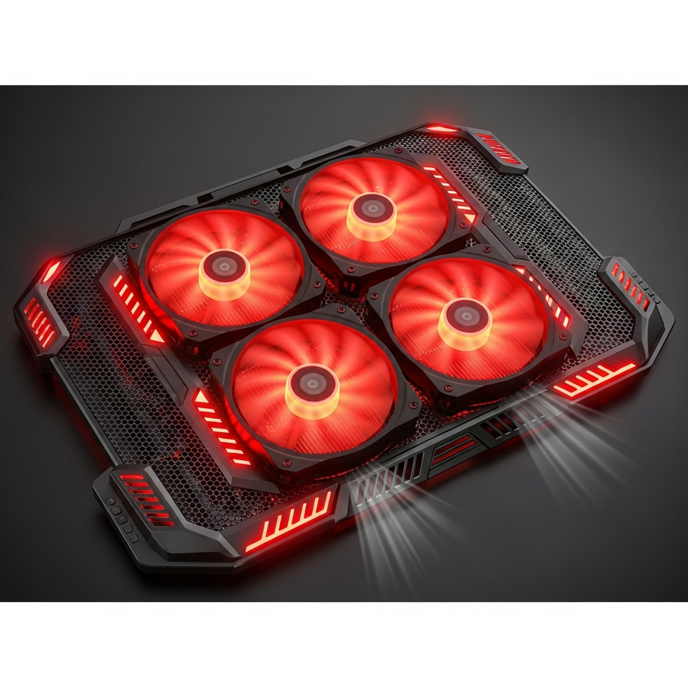
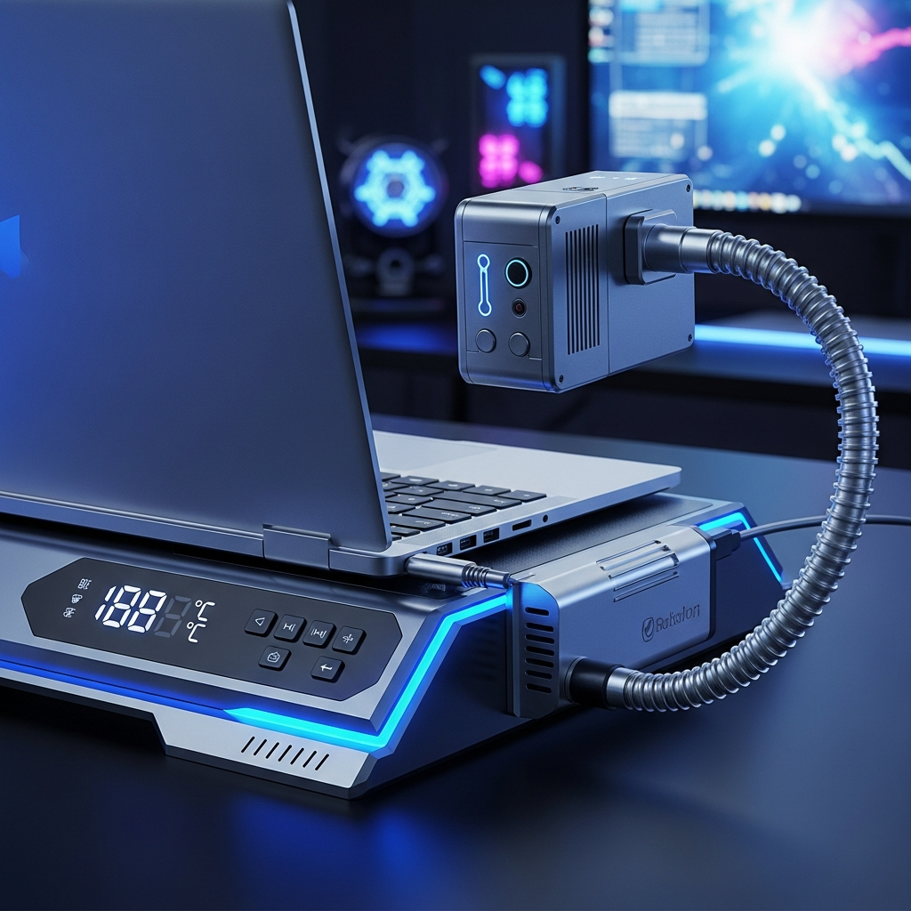
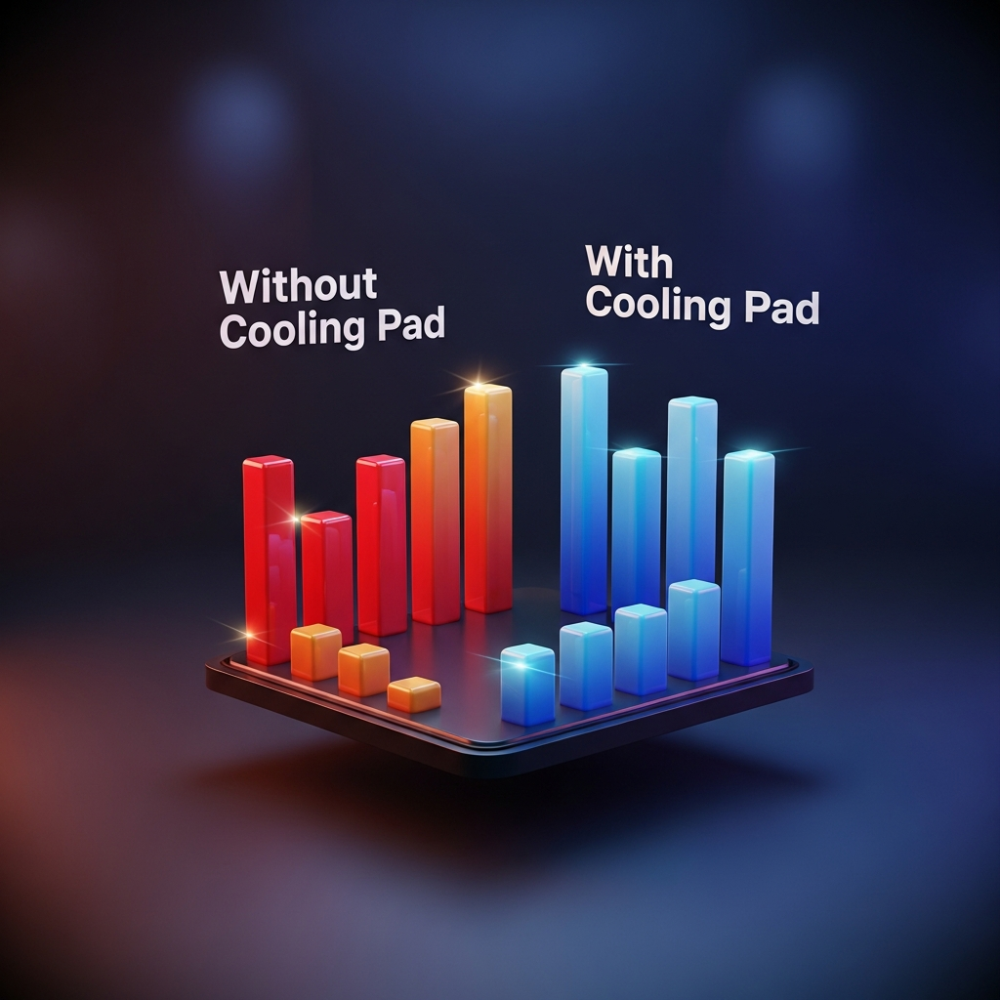

A verdade sobre as bases de notebook: refrigeração, ergonomia e performance.
Explorar Modelos

Focadas na postura e elevação. Feitas geralmente de alumínio para dissipação passiva de calor. Ideais para escritórios silenciosos.

Equipadas com ventoinhas para forçar o fluxo de ar. Essenciais para gamers e renderização pesada, reduzindo o thermal throttling.

Acoplados na saída de ar, sugam o ar quente para fora. Extremamente eficientes para notebooks que sofrem com superaquecimento.
Estudos e testes práticos mostram que a eficácia varia drasticamente dependendo do modelo do notebook e da base.
Dica Pro: Bases ativas funcionam melhor em notebooks com entradas de ar na parte inferior. Se o seu notebook é fechado embaixo, uma base de alumínio pode ser mais eficaz.

Investir em uma base é investir na longevidade do seu equipamento. Seja para conforto ergonômico ou performance bruta, existe um modelo ideal para seu uso.